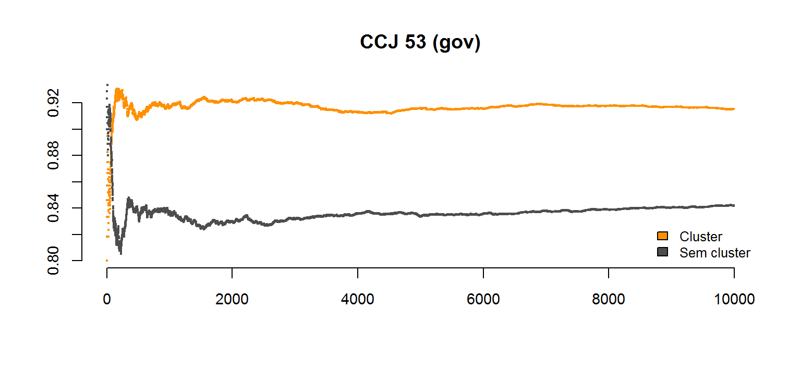

Um composto construído para medir uma dimensão ou variável;
Operador de conceitos;
Medida, geralmente quantitativa, que pode ser usada para ilustrar e comunicar de forma simples um conjunto de fenômenos complexos.
Por detrás de teorias explícitas ou hipóteses há sempre um fenômeno por explicar, por testar - uma teoria auxiliar;
Esta teoria auxiliar tem a função de especificar as relações entre os mundos teórico e empírico;
Esta relação é referenciada na filosofia da ciência, na sociologia e literaturas psicométricas como correlação epistêmica, regras de correspondência e definições operacionais consoante o caso.
Quanto à natureza, indicadores podem ser analíticos (constituído por uma única variável, como esperança de vida, taxa de alfabetização, de escolaridade média, etc) e sintético ( resultante de uma composição de variáveis, como o IDH).
Quanto à natureza do ente indicado, um indicador pode ser: De recurso (indicador de insumo), realidade empírica (indicador-produto) e ou processo (indicador-processo).
Indicadores como rendimento familiar; desempenho escolar; índices de evasão; índices de repetência; são indicadores que podem ser medidos a partir de escalas de intervalo ou de proporção e podem ser trabalhados a partir de possíveis relações quantificáveis;
Aspectos como concepções acerca da função social da escola; preferências político-partidárias, entre outros, só podem ser medidos segundo escalas nominais ou ordinais.
-Problema do crescimento e do desenvolvimento econômicos: como mensurar desenvolvimento? -A solução mais frequente na literatura é o PIB per capita, um proxy.
Não existe uma teoria formal que permita orientar com estrita objetividade a seleção de indicadores. Porém, um indicador precisa externar credibilidade, o que requer que ele seja gerado de forma criteriosa, obdecendo os seguintes critérios:
Comparar a estatística (média e mediana) empiricamente observada de cada partido em cada Comissão com as obtidas a partir de amostras aleatórias dos membros de cada partido.
Agregação de todos os partidos para simular os valores sob a hipótese nula de cada Comissão (simulação com cluster).
Aceitar H1 se p for menor que um \(\alpha\) (e. g., 0.1), onde p é a razão das vezes em que a estatística observada foi maior do que as simuladas.

Fontes
Links